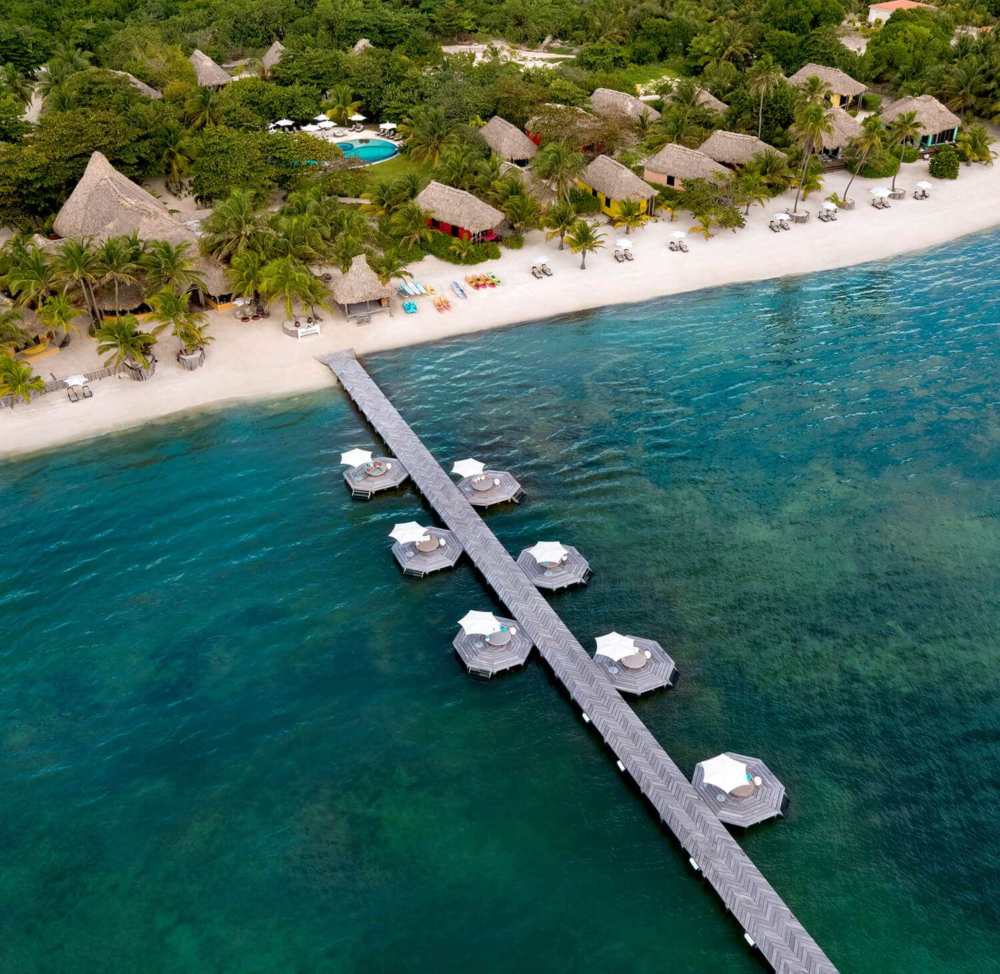
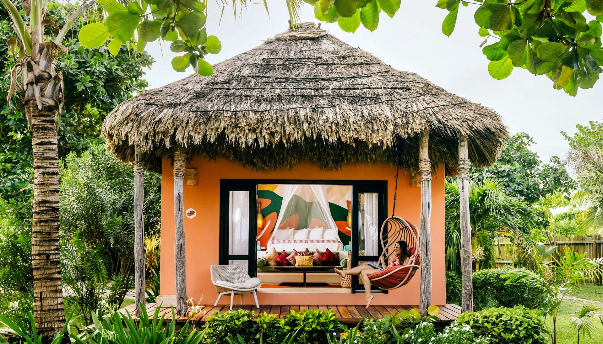
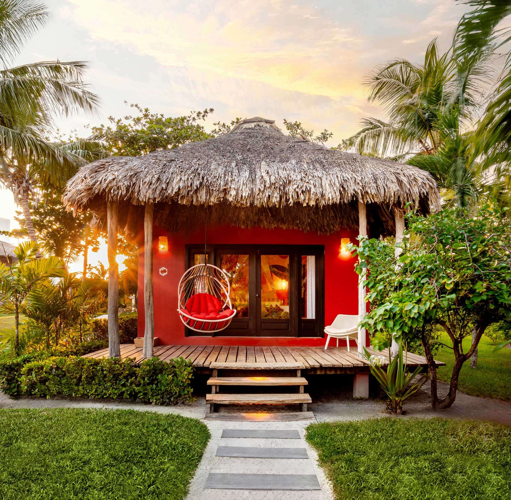
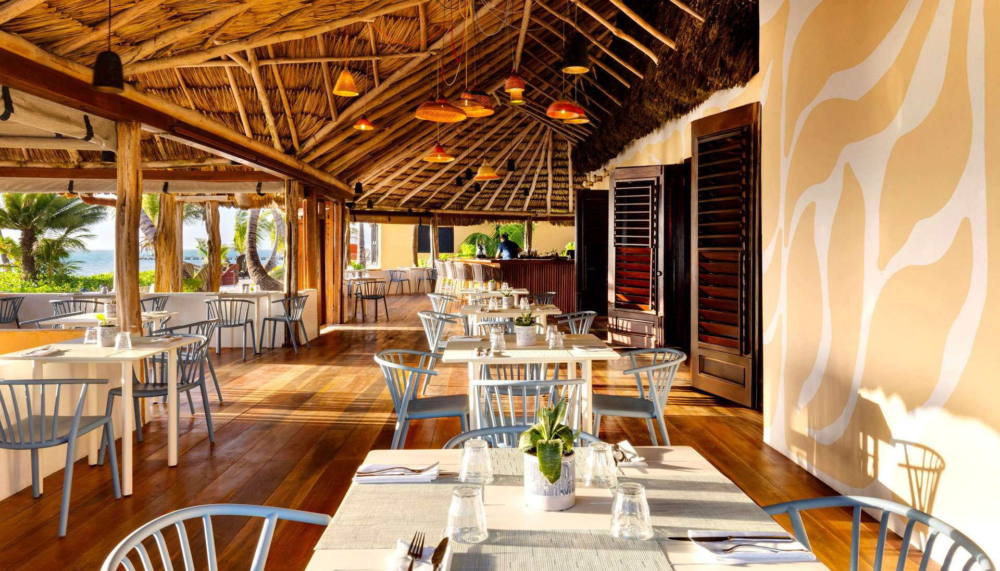
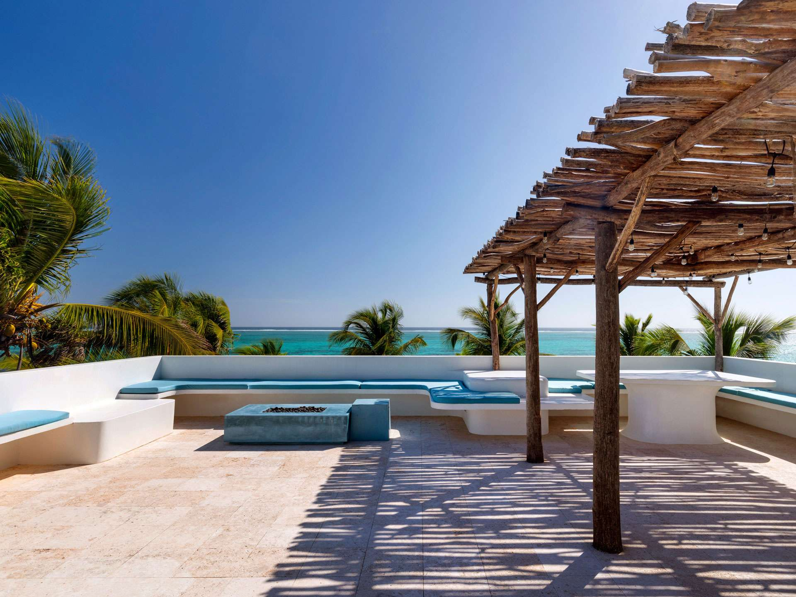

Ambergris Caye, Belize
The Place
An island on the edge of the reef, and the resort where we'll say “I do.”
The island
Ambergris Caye
Ambergris Caye is Belize's largest island: about 25 miles of white sand, palm trees and turquoise water off the country's northern coast. Just offshore runs the Belize Barrier Reef, the second-largest barrier reef in the world, which makes this one of the best places anywhere to snorkel and dive.
Island life moves at its own pace. Golf carts outnumber cars, the town of San Pedro is full of beach bars and fresh seafood, and Hol Chan Marine Reserve and Shark Ray Alley are a short boat ride away.


The resort
Matachica Resort & Spa
Matachica is a boutique beachfront hideaway about five miles north of San Pedro, on a quiet stretch of North Ambergris Caye. Colorful casitas and villas with thatched palapa roofs are tucked among the palms, just steps from the sand.
Days here are slow in the best way: swim, snorkel, lounge by the pool, or settle in at the end of the dock with a drink in hand. This is where we'll get married, and we hope you'll stay here with us.






Before you go
Good to know
-
English spoken
English is Belize's official language, so getting around is easy.
-
U.S. dollars welcome
The Belize dollar is fixed at 2 to 1 with the U.S. dollar, and U.S. cash is accepted almost everywhere.
-
Golf carts & boats
Golf carts are the main way to get around the island, and water taxis connect the beaches and town.
Resort photos courtesy of Matachica Resort & Spa. Island photos via Wikimedia Commons: San Pedro Beach by Areed145 (CC BY-SA 3.0); Ambergris Caye, Belize by Asteiner (CC BY-SA 3.0); Green Sea Turtle, Hol Chan by Nikdahl (CC BY-SA 3.0); Secret Beach by Chad Davis (CC BY-SA 2.0); Ambergris Caye by Chad Davis (CC BY 2.0); Secret Beach sunset by Asdfjrjjj (CC BY-SA 4.0).